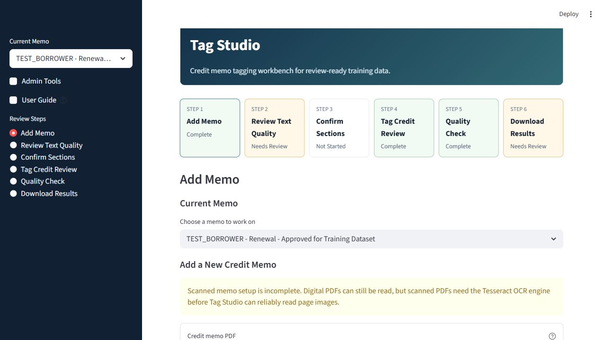
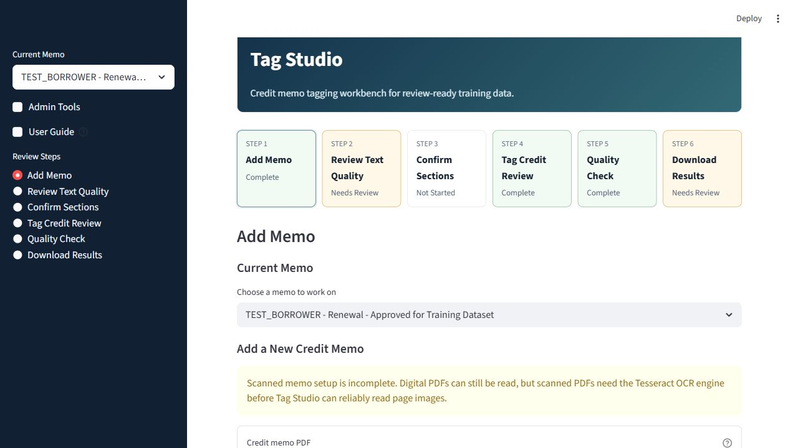
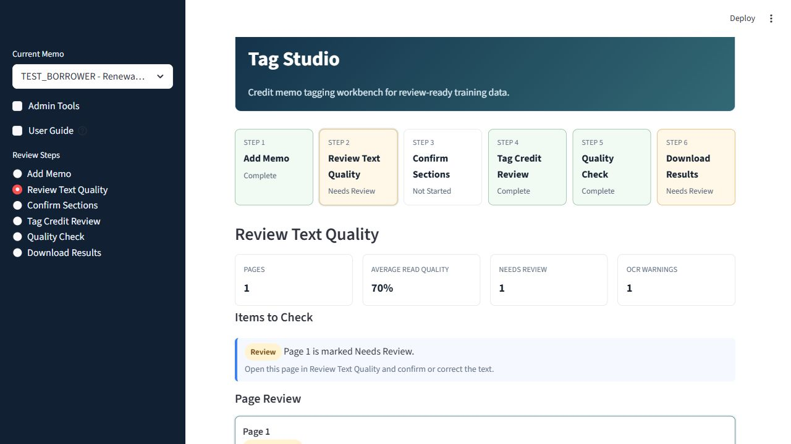
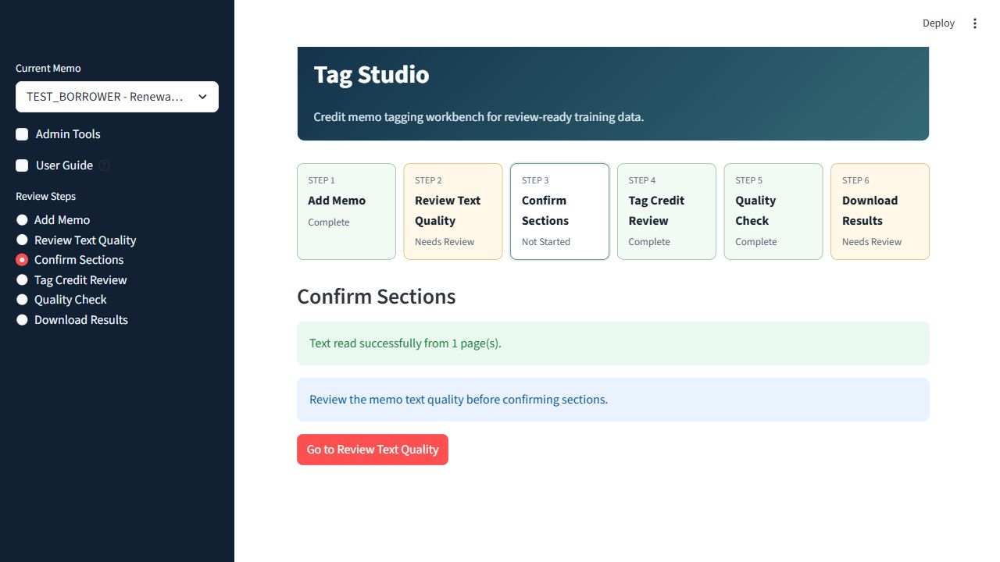
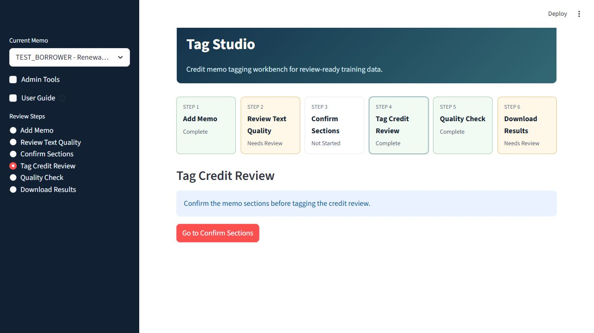
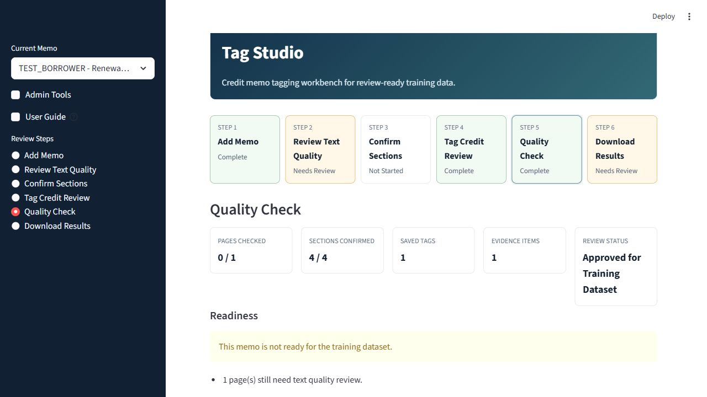
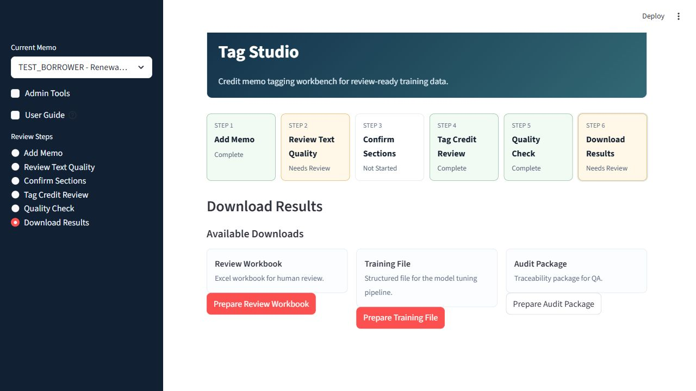

What Tag Studio Is For
Tag Studio helps credit reviewers turn credit memo content into clean, evidence-backed training records. The goal is not to make a credit decision inside this tool. The goal is to create reliable examples of what a strong credit review should notice, cite, and preserve.
Approved for Training Dataset means the memo record is clean enough to be exported for model-training workflows. It does not mean the credit is approved.
The Six-Step Workflow

Admin Tools collapsed and User Guide available in the sidebar.Add Memo
Start at Add Memo. Select the credit memo PDF, enter the borrower name or internal borrower ID, choose the memo type and facility type, then select Read Memo. See Figure 2, Add Memo > Read Memo.

Add Memo screen captured from Tag Studio using synthetic TEST_BORROWER data.Review Text Quality
Use Review Text Quality to confirm the extracted text is good enough for tagging. Open any page marked Needs Review, compare the page image to the extracted text, correct obvious OCR problems, and select Save Page Review. See Figure 3, Review Text Quality > Save Page Review.
Use Save Page Review when you changed text or added notes. Use Mark Page Reviewed when no correction is needed.

Review Text Quality screen showing page-level quality metrics and review actions.Confirm Sections
Use Confirm Sections to map the memo's original headings to Tag Studio's standard memo sections. The original heading can vary across banks or memo templates; the standard section should be consistent. See Figure 4, Confirm Sections > Standard Memo Section.
Use Remember this heading next time only when you are confident the memo heading is a good alias for the selected standard section.

Confirm Sections screen showing detected memo headings, section status, and standard section mapping.Tag Credit Review and Attach Evidence
Use Tag Credit Review one section at a time. The left side shows the memo page, the middle shows section text, and the right side captures evidence. Select the lines that support the tag values, choose the evidence type, then select Add Evidence. See Figure 5, Tag Credit Review > Select evidence lines.
Use Citation confidence to signal whether the selected text directly supports the point. After evidence is attached, complete the tag panels and select Save This Section.

Tag Credit Review screen showing the page preview, section text, evidence panel, and credit tags.Quality Check
Use Quality Check before approving a memo record. The screen summarizes whether pages were checked, sections were confirmed, tags were saved, and evidence was attached. See Figure 6, Quality Check > Approve for Training Dataset.

Quality Check screen showing readiness metrics and the approval action.Download Results
Use Download Results after the memo is approved for the training dataset. Create only the files you need. See Figure 7, Download Results > Available Downloads.
- Review Workbook: Excel file for human review and QA.
- Training File: Structured model-training file prepared from approved records.
- Audit Package: Traceability file for review history and QA support.

Download Results screen showing the three reviewer-facing download packages.Common Reviewer Mistakes
- Skipping text review: OCR errors can create bad tags. Check pages marked for review before confirming sections.
- Mapping by wording only: A heading called "Cash Flow" may belong to
Repayment Analysisdepending on the content. - Saving tags without evidence: Important credit facts should be tied to memo text whenever possible.
- Using "Not addressed" too quickly: First check whether the memo discusses the topic under a different heading.
- Approving incomplete records: Use
Quality Checkas the final gate before any training export.
Guide Sources
This guide cites captured Tag Studio app screens from a synthetic TEST_BORROWER memo. No real borrower or customer data is used.
- Figure 1: Tag Studio sidebar,
Admin Toolscollapsed andUser Guidevisible. - Figure 2: Tag Studio
Add Memoscreen. - Figure 3: Tag Studio
Review Text Qualityscreen. - Figure 4: Tag Studio
Confirm Sectionsscreen. - Figure 5: Tag Studio
Tag Credit Reviewscreen. - Figure 6: Tag Studio
Quality Checkscreen. - Figure 7: Tag Studio
Download Resultsscreen.